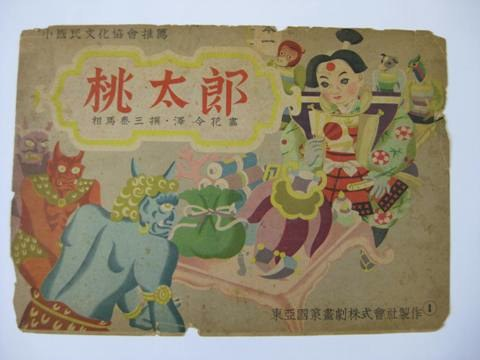
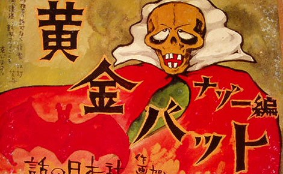
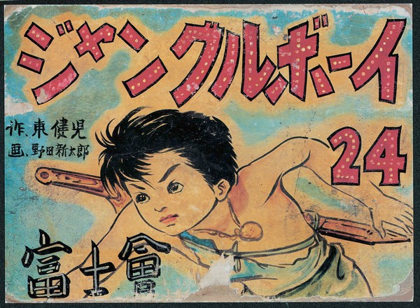
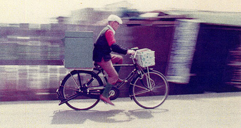

Lesson Ideas

DISCUSSION QUESTIONS
How do stories circulate in our culture? What media carry the stories? How have they circulated in the past?
When new media arrive in our lives we often do not know how to deal with them. Why do I need a phone in my pocket I already have one at home, why do I need a camera on my phone I already have one, why do I need email and text? When the TV first appeared in Japan one of the ways it was described was as “an electric kamishibai.”
This unit presents the unique mode of story telling that flourished in Japan before the advent of television—the kamishibai (picture storytelling). Though telling stories with pictures has been around since the age of cave dwellers, different formats and platforms for telling stories have risen and fallen during that time. Kamishibai (literally “Paper Play”) became an industry in the 1920s in Japan.
History FROM “KAMISHIBAI FOR KIDS” Homepage
http://www.kamishibai.com/history.html
etoki (picture-tellers) adopted methods from scroll picture storytelling to tell more secular stories. Throughout the Edo period (1603-1867) and on into the Meiji period (1868-1912), a variety of street performance styles evolved, using pictures and narration.
The stages used for these early precursors of kamishibai were not as easily transportable as the form that developed in the late 1920s and came to be what we know as kamishibai today. The kamishibai performer made a living by selling candy, and he could strap the small wooden stage onto his bicycle with the illustrated cards and his wares and carry them easily from town to town. Typically, the stories were told in serial fashion and were so suspenseful that audiences came repeatedly to buy candy and to hear the next episode of the story.
Kamishibai is, if anything, poor-man’s theater, and it flourished during a time when Japan experienced extreme financial hardship. In the 1930s, Japan suffered from an economic depression that sent many people onto the streets looking for a way to live from one day to the next, and kamishibai offered an opportunity for artists and storytellers to make a meager living. During and after World War II, kamishibai became an ever more integral part of the society as a form of entertainment that could be transported easily even into bomb-shelters and devastated neighborhoods. At this time, it was entertainment as much for adults as for children.
By the 1950s and the advent of television, kamishibai had become so popular that television was initially referred to as denki kamishibai, or “electric kamishibai.” But as Japan became increasingly affluent, kamishibai became associated with poverty and backwardness. Eventually kamishibai as a street-performance art all but disappeared. The artists who had made their living with kamishibai turned to more lucrative pursuits, notably the creation of manga (comic books) and later anime, but they never entirely forgot their roots in kamishibai. In fact, kamishibai is often seen as a precursor of manga, and its influence can still be felt in the distinguishing features of these later media.
KAMISHIBAI
Teachers Guide available at
http://www.kamishibai.com/teachers_guide.html
More Guides at
http://www.storycardtheater.com/
See a sample story at
http://www.janm.org/janmkids/kamishibai.php
More on Kamishibai
http://www.kamishibai.org/index.htm
International Kamishibai Association of Japan America Club
http://www.geocities.jp/kamishibai/index-e.html
Cards available for download at
http://www.glasswings.com.au/sensual/pastel/history.html

Kamishibai=Paper Plays


Materials for Teaching
Japanese Visual Culture (K-12)